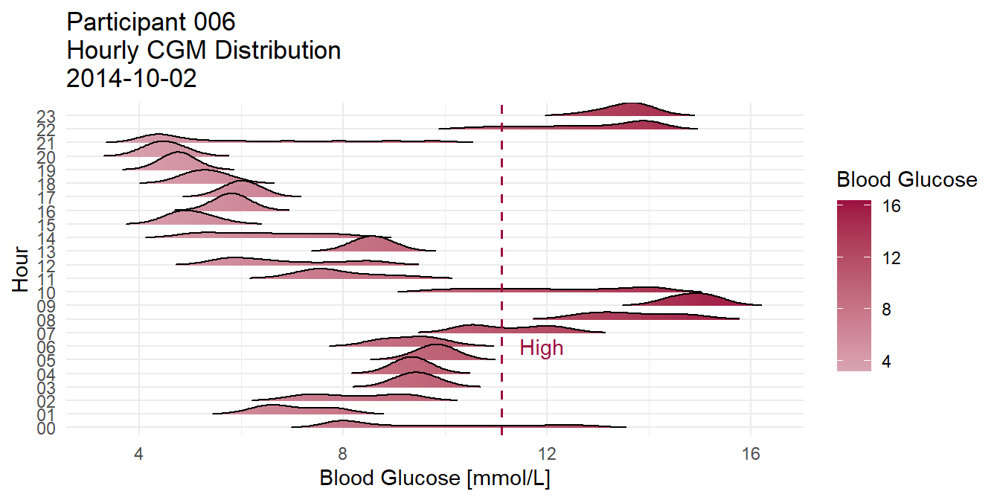

Loading Data
workingDir <- "C:/Users/seand/OneDrive/Documents/D1NAMO/"
cohorts <- dir(workingDir) # diabetes_subset, healthy_subset
glucose_df <- tibble()
insulin_df <- tibble()
food_nondiabetic_df <- tibble()
food_diabetic_df <- tibble()
sensor_df <- tibble()
for (cohort in cohorts) {
participants <- dir(paste0(workingDir,cohort))
tmp_cohort_glucose_df <- tibble()
if(stri_cmp_eq(cohort, "diabetes_subset")){ tmp_cohort_insulin_df <- tibble() }
if(stri_cmp_eq(cohort, "diabetes_subset")){ tmp_cohort_food_diabetic_df <- tibble()
} else { tmp_cohort_food_nondiabetic_df <- tibble() }
tmp_cohort_sensor_df <- tibble()
for (participant in participants) {
participant_path <- paste0(workingDir,cohort,"/",participant)
# Gather glucose data
glucose_path <- paste0(participant_path,"/glucose.csv")
tmp_participant_glucose_df <- read_csv(glucose_path) %>%
cbind(participantID = participant, cohortGroup = cohort)
tmp_cohort_glucose_df %<>% rbind(tmp_participant_glucose_df)
# Gather insulin data
if(stri_cmp_eq(cohort, "diabetes_subset")){
insulin_path <- paste0(participant_path,"/insulin.csv")
tmp_participant_insulin_df <- read_csv(insulin_path) %>%
cbind(participantID = participant, cohortGroup = cohort)
tmp_cohort_insulin_df %<>% rbind(tmp_participant_insulin_df)
}
# Gather food data
food_path <- paste0(participant_path,"/food.csv")
tmp_participant_food_df <- read_csv(food_path) %>%
cbind(participantID = participant, cohortGroup = cohort)
if(stri_cmp_eq(cohort, "diabetes_subset")){
tmp_cohort_food_diabetic_df %<>% rbind(tmp_participant_food_df)
} else { tmp_cohort_food_nondiabetic_df %<>% rbind(tmp_participant_food_df) }
# Gather sensor summary data
times_sensor_data <- dir(paste0(participant_path,"/sensor_data"))
sensor_summary_paths <- c()
for (time in times_sensor_data) {
sensor_data <- dir(paste0(participant_path,"/sensor_data/",time))
sensor_summary <- sensor_data[which(stri_detect(sensor_data, fixed = "Summary"))]
sensor_summary_paths <- c(sensor_summary_paths,
paste0(participant_path,"/sensor_data/",
time,"/",sensor_summary))
}
tmp_participant_sensor_df <- tibble()
for (path in sensor_summary_paths) { tmp_participant_sensor_df %<>%
rbind(read_csv(path)) }
tmp_participant_sensor_df %<>% cbind(participantID = participant, cohortGroup = cohort)
tmp_cohort_sensor_df %<>% rbind(tmp_participant_sensor_df)
}
glucose_df %<>% rbind(tmp_cohort_glucose_df)
if(stri_cmp_eq(cohort, "diabetes_subset")){ insulin_df %<>% rbind(tmp_cohort_insulin_df) }
if(stri_cmp_eq(cohort, "diabetes_subset")){
food_diabetic_df %<>% rbind(tmp_cohort_food_diabetic_df)
} else { food_nondiabetic_df %<>% rbind(tmp_cohort_food_nondiabetic_df) }
sensor_df %<>% rbind(tmp_cohort_sensor_df)
}
# make date and time col for sensor_df
sensor_df %<>% mutate(date=as.Date(stri_extract(Time,regex="^(\\d{2}/\\d{2}/\\d{4})"),
format = "%d/%m/%y"),
time=parse_hms(stri_extract(Time,regex="(\\d{2}:\\d{2}:\\d{2})"))) %>%
select(-Time)
# food_nondiabetic_df$calories has values that should be in $description
index_cal_desc_swap <- !(stri_detect(food_nondiabetic_df$calories,regex="^\\d+$") |
is.na(food_nondiabetic_df$calories))
food_nondiabetic_df$description[index_cal_desc_swap] <- food_nondiabetic_df$calories[index_cal_desc_swap]
food_nondiabetic_df$calories[index_cal_desc_swap] <- NA
rm(tmp_cohort_glucose_df,tmp_participant_glucose_df,tmp_cohort_insulin_df,
tmp_participant_insulin_df,tmp_cohort_food_diabetic_df,tmp_participant_food_df,
tmp_cohort_food_nondiabetic_df,tmp_cohort_sensor_df,tmp_participant_sensor_df)colorPalette <- c('#d9a5b3', '#c6d7eb', '#1868ae', '#9ec1b6', '#9d0f40', '#e0dab7')This is the insulin_df table visualized.
library(visdat)
visdat::vis_dat(insulin_df)This is a word cloud of most frequent words appearing in participants’ meal descriptions. They are grouped by cohort: diabetic and non-diabetic.
library(wordcloud2)
# https://cran.r-project.org/web/packages/wordcloud2/vignettes/wordcloud.html
data("stop_words")
topFoods <- function(df, color1, color2){
wordFreq <- unnest_tokens(tbl = df, output = word, input = description) %>%
anti_join(y = stop_words, by = "word") %>%
filter(stri_detect(word, regex = "^(\\D)")) %>%
count(word, sort = TRUE, name = "freq")
wordcloud2(wordFreq, color = c(rep(color1, 10),rep(color2, nrow(wordFreq)-10)))
}
topFoods(food_diabetic_df, colorPalette[3], colorPalette[6])topFoods(food_nondiabetic_df, colorPalette[5], colorPalette[4])This is the TF-IDF table of the meal description words. Rather than grouping IDF by ‘document’ this data is grouped by quality.
# TF-IDF
tfidf <- function(df, group){
unnest_tokens(df, word, description) %>%
anti_join(stop_words, by = "word") %>%
filter(stri_detect(word, regex = "^(\\D)")) %>%
count(word, across({{ group }}), name = "n") %>%
bind_tf_idf(word, {{ group }}, n)
}
tfidf(food_diabetic_df, "quality")## # A tibble: 258 x 6
## word quality n tf idf tf_idf
## <chr> <ord> <int> <dbl> <dbl> <dbl>
## 1 alfalfa Good quality 1 0.00549 1.10 0.00604
## 2 apple Good quality 1 0.00549 0 0
## 3 apple Medium quality 2 0.0137 0 0
## 4 apple Low quality 1 0.00699 0 0
## 5 asiago Good quality 3 0.0165 0.405 0.00668
## 6 asiago Medium quality 2 0.0137 0.405 0.00555
## 7 au Good quality 1 0.00549 1.10 0.00604
## 8 babybel Medium quality 1 0.00685 1.10 0.00752
## 9 baguette Low quality 1 0.00699 1.10 0.00768
## 10 baked Good quality 2 0.0110 1.10 0.0121
## # ... with 248 more rowsThis is a series of histograms that show how word count is related to IF-IDF
# hist comparison of n, tf, idf, tf-idf
tfidf_quality <- tfidf(food_diabetic_df, "quality")
tfidf_quality %<>% mutate(
tfQuantile = ifelse(tf > quantile(tf,probs = 0.5,na.rm = TRUE,names = FALSE),
"highQuant","lowQuant"),
idfQuantile = ifelse(idf > quantile(idf,probs = 0.5,na.rm = TRUE,names = FALSE),
"highQuant","lowQuant")
)
tfidf_hist <- function(df, x, fill, binwidth, color1, color2){
df %>% ggplot( aes(x = {{ x }}, fill = {{ fill }}) ) +
geom_histogram(binwidth = binwidth, color = 'white') +
scale_fill_manual(values = c(color1, color2))
}This shows term frequency overylayed by the IDF upper and lower quantiles.
tfidf_hist(tfidf_quality, `tf`, `idfQuantile`, 0.005, colorPalette[1], colorPalette[6])
This shows IDF overlayed by TF upper and lower quantiles.
tfidf_hist(tfidf_quality, `idf`, `tfQuantile`, 0.08, colorPalette[4], colorPalette[2])This shows TF-IDF overlayed by TF upper and lower quantiles.
tfidf_hist(tfidf_quality, `tf_idf`, `tfQuantile`, 0.002, colorPalette[4], colorPalette[2])This shows TF-IDF overlayed by IDF upper and lower quantiles.
tfidf_hist(tfidf_quality, `tf_idf`, `idfQuantile`, 0.002, colorPalette[1], colorPalette[6])This is a treemap of the top TF-IDF terms grouped by cohort.
library(treemap)
# tree map or mosaic map
mosaic <- function(df, group, plotTitle){
df %>% filter(n > 3, tf_idf > 0) %>%
arrange(group) %>%
treemap::treemap(index = c(group, "word"),vSize = "tf_idf",vColor = group,
type = "categorical",title = plotTitle,fontsize.labels = c(0, 10),
fontfamily.labels = "serif",
palette = c(colorPalette[4],colorPalette[2],colorPalette[1]),
align.labels = c("center", "center"),border.lwds = 0
)
}
food_diabetic_tfidf<- tfidf(food_diabetic_df, "quality")
food_nondiabetic_tfidf<- tfidf(food_nondiabetic_df, "quality")Diabetic Cohort
mosaic(food_diabetic_tfidf, "quality", "TF-IDF")
Non Diabetic Cohort
mosaic(food_nondiabetic_tfidf, "quality", "TF-IDF")
This shows the percent of meals that are high, medium, or low quality grouped by cohort.
# amount of meals for each quality, per cohort
foodQualityMatrix <- matrix(c(count(food_nondiabetic_df, quality)$n,
count(food_diabetic_df, quality)$n), ncol = 2)
colnames(foodQualityMatrix) <- c("nondiabetic", "diabetic")
# arrange good, med, low
foodQualityMatrix <- rbind(foodQualityMatrix[1,],foodQualityMatrix[3,],foodQualityMatrix[2,])
rownames(foodQualityMatrix) <- c("Good quality", "Medium quality", "Low quality")
par(mar=c(5,6,2,1))
apply(foodQualityMatrix, 2, function(x){x*100/sum(x)}) %>%
barplot(horiz = TRUE,col = c(colorPalette[4],colorPalette[2],colorPalette[1]),
legend.text = TRUE,args.legend = list(x = "topleft", inset=c(0.10,-0.18),
ncol = 4, bty='n', xpd = TRUE),
las = 1,border = 'white',xlab = 'Percent of Meals by Quality'
)
This shows the distributions of Continuous Glucose Monitor (CGM) Measurements for all 9 diabetic participants.
glucose_df %>% filter(type == "cgm") %>% ggplot(aes(x=participantID, y=glucose)) +
geom_violin(trim = FALSE, fill=colorPalette[2], color=colorPalette[3]) +
geom_boxplot(width=0.06, fill=colorPalette[1]) +
labs(x = "participantID", y = "Blood Glucose [mmol/L]") +
ggtitle("Participant Distributions of CGM Measurements") +
geom_hline(yintercept=11.1, linetype='dashed', color=colorPalette[5], size=0.6) +
annotate("text", x="009", y=11.1, label="High", color = colorPalette[5], vjust=-0.5) +
theme_minimal() +
theme(plot.title = element_text(hjust = 0.5))
This shows the distribution of diabetic participant 006 CGM, heart rate, and breathing rate on 2014-10-02.
library(ggridges)
# https://cran.r-project.org/web/packages/ggridges/vignettes/introduction.html
glucose_df %>%
filter(type == "cgm", participantID == "006", date == unique(date)[2]) %>%
mutate(time=stri_extract(as.character(time),regex="^(\\d{2})")) %>%
ggplot(aes(x=glucose, y=time, fill=stat(x))) +
geom_density_ridges_gradient(scale=1.3, rel_min_height=0.01) +
scale_fill_continuous(name="Glucose", low=colorPalette[1], high=colorPalette[5]) +
labs(x="Blood Glucose [mmol/L]", y="Hour") +
ggtitle('Participant 006\nHourly CGM Distribution\n2014-10-02') +
geom_vline(xintercept=11.1, linetype='dashed', color=colorPalette[5], size=0.6) +
annotate("text", x=11.1, y="06", label="High", color=colorPalette[5], hjust=-0.4) +
theme_minimal() +
theme(plot.title = element_text(hjust = 0.5))
# Heart Rate
sensor_df %>%
select(HR, BR, Activity, participantID, cohortGroup, date, time) %>%
mutate(time = stri_extract(as.character(time), regex = "^(\\d{2})")) %>%
filter(participantID == "006", cohortGroup == "diabetes_subset",
date == unique(date)[2], HR > 0, BR > 0) %>%
ggplot(aes(x=HR, y=time, fill=stat(x))) +
geom_density_ridges_gradient(scale=1.3, rel_min_height=0.01) +
scale_fill_continuous(name="Heart Rate", low=colorPalette[2], high=colorPalette[4]) +
labs(x="Heart Rate [bpm]", y="Hour") +
ggtitle("Participant 006\nHourly Heart Rate Distribution\n2014-10-02") +
theme_minimal()# Breathing Rate
sensor_df %>%
select(HR, BR, Activity, participantID, cohortGroup, date, time) %>%
mutate(time = stri_extract(as.character(time), regex = "^(\\d{2})")) %>%
filter(participantID == "006", cohortGroup == "diabetes_subset",
date == unique(date)[2], HR > 0, BR > 0) %>%
ggplot(aes(x=BR, y=time, fill=stat(x))) +
geom_density_ridges_gradient(scale=1.3, rel_min_height=0.01) +
scale_fill_continuous(name="Breathing Rate", low=colorPalette[6], high=colorPalette[3]) +
labs(x="Breathing Rate [breaths/min]", y="Hour") +
ggtitle("Participant 006\nHourly Breathing Rate Distribution\n2014-10-02") +
theme_minimal()
This shows a radar graph (aka spider graph) of diabetic participant 006 CGM on 2014-10-02.
library(fmsb)
# https://cran.r-project.org/web/packages/fmsb/fmsb.pdf
# radar cgm for one individual
glucose_df_wide <-
filter(glucose_df, type == "cgm", participantID == "006", date == unique(date)[2]) %>%
mutate(time = stri_extract(as.character(time),regex="^(\\d{2})")) %>%
group_by(time) %>%
summarise(glucose = mean(glucose)) %>%
pivot_wider(names_from = time, values_from = glucose)
rbind(
rep(16,ncol(glucose_df_wide)),
rep(4,ncol(glucose_df_wide)),
glucose_df_wide[,order(ncol(glucose_df_wide):1)]
) %>% radarchart(axistype=1, seg=3, plwd=1, centerzero=FALSE, cglcol=colorPalette[1], cglty=1,
axislabcol=colorPalette[5], caxislabels=seq(4,16,4), vlcex=0.8,
title = "Participant 006\nHourly Mean Glucose\n2014-10-02"
)